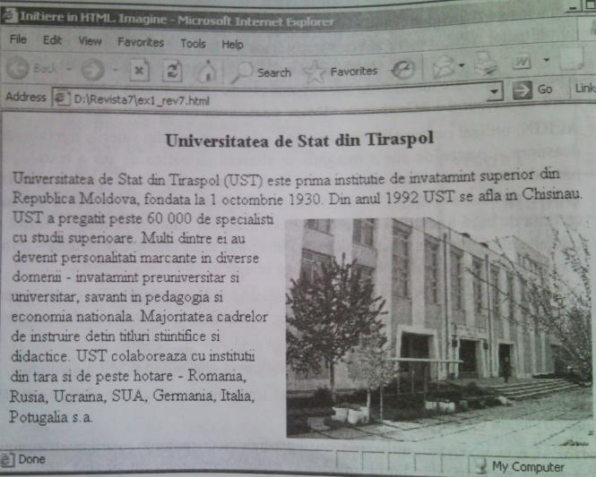
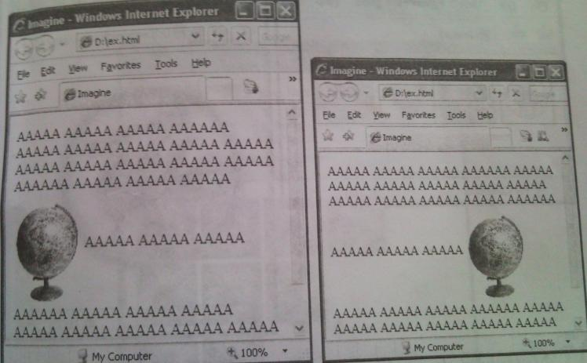
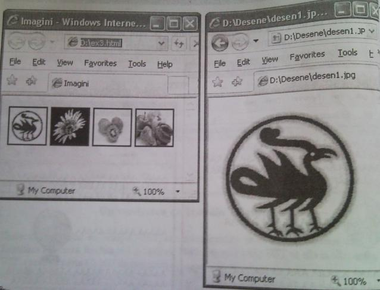
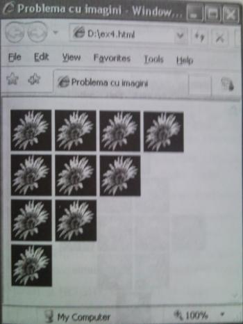
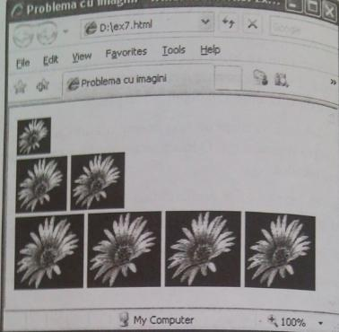
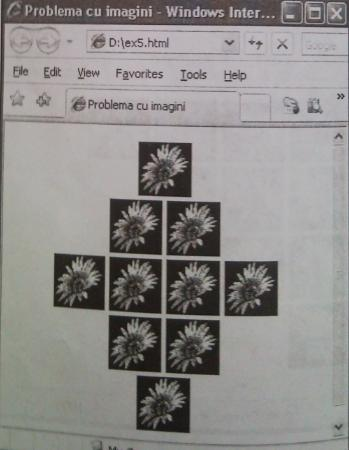

Imagini
În afara de faptul ca imaginile furnizeaza informatii, ele pot conferi unei paginii web atractivitate. Totusi utilizarea lor
intr-un document html se va face rational, deoarece fiecare imagine „consuma” timp pentru decodificarea si
afisarea ei. Practica arata ca daca incarcarea unei pagini web dureaza mai mult de 12 secunde, atunci 50% dintre
utilizatori renunta accesarea ei.
Fisierele-imagini au diferite formate. Browsere-le accepta (de regula) urmatoarele formate:
° GIF (Grafics Interchange Format) - fisiere cu extensia .gif;
° JPEG (Join Photographic Expert Group) - fisiere cu extensia .jpeg sau .jpg;
° TIFF (Tagged Image File Format) - fisiere cu extensia ,tif sau .tiff;
° BMP (BitMap) - fisiere cu extensia .bmp;
° XPM (X PixMap) - fisiere cu extensia .xmp;
° XBM (X BitMap) - fisiere cu extensia .xbm.
Pentru a insera o imagine „inline” (adica linga text) se utilizeaza eticheta < IMG >, cu atributul obligator SRC,, a carui
valoare este adresa URL a imaginii:
< IMG SRC = "URL" >
Sintaxa pentru URL este identica cu cea utilizata pentru legaturi (vezi lectia 4).
Icircnn afara de atributul SRC eticheta  poate avea urmatoarele atribute:
poate avea urmatoarele atribute:
°ALIGN. utilizat pentru alinierea imaginii si care are una din valorile top (aliniere
deasupra - partea de sus a imaginii se aliniaza cu partea de sus a textului ce precede imaginea), bottom (aliniere la baza
partea de jos a imaginii se aliniaza cu linia de baza a textului), middle (aliniere la mijloc - mijlocul imaginii
se aliniaza
cu linia de baza a textului ce precede imaginea), left (aliniere la stinga - textul si
celelalte elemente sint plasate in dreapta imaginii), right(aliniere la dreapta - textul si celelalte elemente sint plasate in
stinga imaginii);
° ALT, utilizat pentru afisarea unui text explicativ in locul imaginii (in cazul in care browser-ul nu incarca imaginea -
optiune stabilita de utilizator sau alta cauza) si care are ca valoare insusi textul explicativ (scris intre " si ");
° WIDTH si HEIGHT, folosite pentru specificarea marimii in pixeli a imaginii;
° BORDER , folosit pentru crearea in jurul imaginii a unui chenar de grosime (in pixeli) egala cu valoarea atributului;
° HSPACE si VSPACE, utilizate pentru precizarea distantei in pixeli pe orizontala, respectiv pe verticala, dintre
imagine si restul elementelor din pagina.
Exemplul I
<HTML>
<Head>
<Title>Initiere in HTML. Imagine</Title>
</Head>
<Body>
<H3 align=center>Universitatea de Stat din Tiraspol</H3>
<P>
Fondat in anul 1959 ca Tehnicumul Elecromecanic din Chisinau.
<IMG SRC="scr/Colegiu.jpg" align=right hspace=10 vspace=10>
Din 01 septembrie 2002 conform Hotararii Guvernului Republicii Moldova institutia respectiva este reorganizata in
Colegiul Politehnic din mun. Chisinau, la care este comasat fostul Colegiul de Telecomunicatii din Chisinau.
Colegiul Politehnic din mun. Chisinau este acredidat de catre Stat prin Hotarirea nr. 010 din 23 mai 2002 a Consiliului
National de Evaluare Academica si Acreditare a Institutiilor de Invatamint din Republica Moldova.In anul 2006 si
2007 Colegiul Politehnic din mun. Chisinau se reacrediteaza la toate specialitatile.
</body>
</html>

Exemplul 2
<HTML>
<head>
<Title>Imagine</Title>
</head>
<Body>
AAAAA AAAAA AAAAA AAAAAA AAAAA AAAAA AAAAA AAAAA AAAAA
AAAAA AAAAA AAAAA AAAAA AAAAA AAAAAA AAAAA AAAAA AAAAA
<IMG SRC="glob.jpg" align=middle width=80 height=120 vspace=0>
AAAAA AAAAA AAAAA AAAAAA AAAAA AAAAA AAAAA AAAAA AAAAA
AAAAA AAAAA AAAAA AAAAA AAAAA AAAAAA AAAAA AAAAA AAAAA
</Body>
</HTML>
Observam ca imaginea este inserata „inline” si, prin urmare, la redimensionarea ferestrei browser-ului ea apare in diferite zone ale acestei ferestre.

Exemplul 3
Urmatoarea pagina web afiseaza 4 imagini-referinta. La executarea unui click pe una dintre referinte se va afisa imaginea corespunzatoare avind dimensiuni reale.
Aceasta tehnica este deseori folosita la crearea asa-numitelor „galerii-foto” (referintele pot fi fisiere de dimensiuni mai mici decit fisirele-imagini referite). Fisierele-imagini se afla in subcatalogul DESENE.
<HTML>
<head>
<Title>lmagini</Title>
</head>
<Body>
<A HREF="Desene\desenl.jpg"><img src=Desene\desenl.jpg width=50 height=50></A>
<A HREF="Desene\desen2.jpg"<img src=Desene\desen2.jpg width=50 height=50></A>
<A HREF="Desene\desen3 . jpg'<img src=Desene\desen3 . jpg width=50 height=50></A>
<A HREF="Desene\desen4.jpg"><img src=Desene\desen4.jpg width=50 height=50</A>
</Body>
</HTML>

Întrebări de control
1. Care sint formatele fisierelor-imagini acceptate de browser-ele web?
2. Ce eticheta se utilizeaza pentru inserarea unei imagini intr-un document html? Care este atributul obligatoriu al acestei etichete?
3. Explicati sensul expresiei imaginea este inserata „inline".
4. Ce atribute neobligatorii poate avea eticheta pentru inserarea imaginilor intr-un document html si care sint valorile acestor atribute?
5. Cum poate fi creata o referinta-imagine?
Sarcini pentru luctu independent
1. Creati o pagina web care va afisa un CV cu fotografia autorului de CV, aliniata la centrul paginii.
2. Creati o pagina web care va afisa citeva imagini-hiperlegaturi de dimensiunile 50 pixeli x 50 pixeli. La executarea unui click pe fiecare imagine browser-ul va afisa aceasta imagine cu dimensiunile 150 pixeli x 150 pixeli.
3. Creati o pagina web care va afisa un text despre orasul Chisinau cu titlul de nivelul 5, culoarea neagra si fundal gri. O imagine a orasului va aparea in chenar si va fi aliniata la dreapta textului.
4. Creati o pagina web care va afisa graficul unei functii.
Indicatie: Acest grafic poate fi construit cu programul Microsoft Excel.
5. Creati o pagina web care va afisa o organigrama.
6. Creati un document html care va afisa urmatoarea pagina web (imaginea inserata repetat poate fi alta).

7. Creati un document html care va afisa urmatoarea pagina web.

8. Creati un document html care va afisa urmatoarea pagina web.
